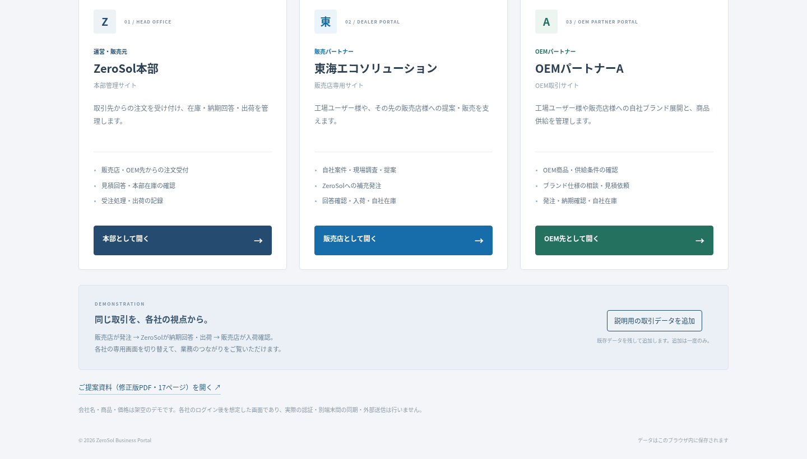
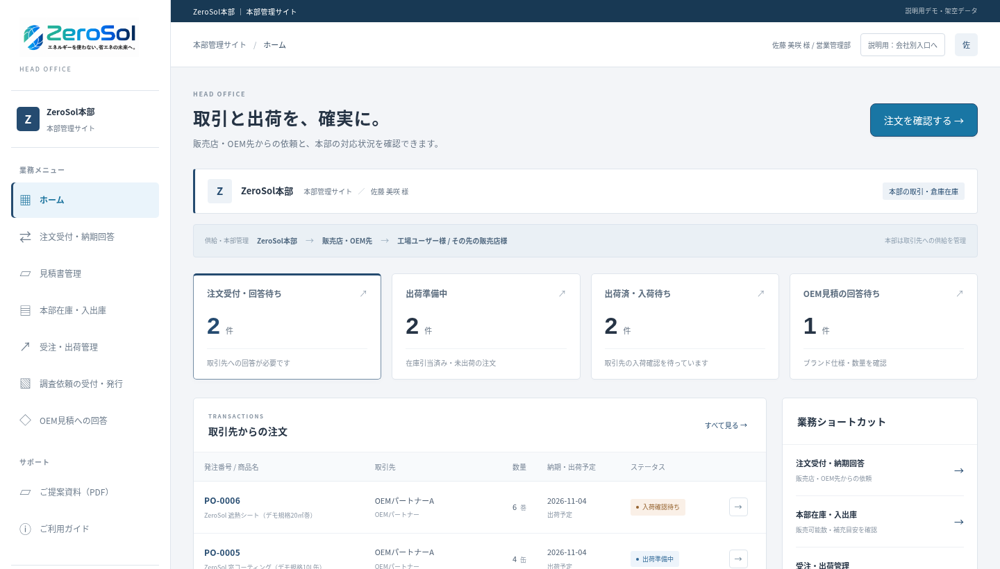
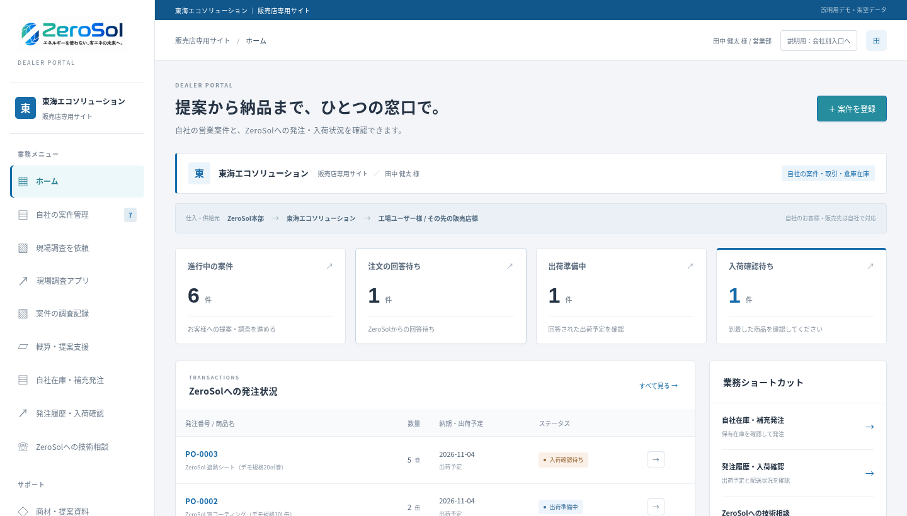
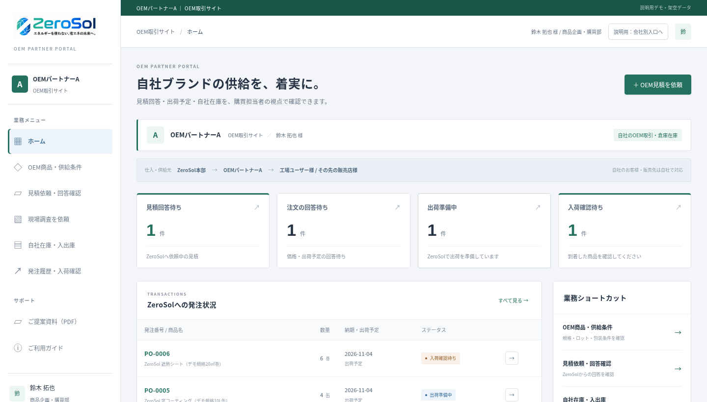

本部と取引先の業務を整える
見積・在庫・発注・出荷を各社の画面で確認。
工場ユーザー様・販売先への対応を支えます。
01 / 業務管理システム
本部・代理店・OEM先が、必要な情報をそれぞれの画面で確認します。

01本部：見積・在庫・受注・出荷を管理
02代理店・OEM先：依頼・発注・納期を確認
開発環境の実画面。指定URLのデプロイ版との照合は未実施です。
02 / ZeroSol本部
本部の対応待ちをまとめ、次に行う業務を確認します。

01取引先からの注文と、回答待ちを確認
02本部在庫を確認し、納期回答・出荷へ
開発環境の実画面。指定URLのデプロイ版との照合は未実施です。
03 / 代理店
工場ユーザー様や、その先の販売店様への提案と取引を支えます。

01自社の営業案件・調査・提案を管理
02ZeroSolへの発注と、自社在庫・入荷を確認
開発環境の実画面。指定URLのデプロイ版との照合は未実施です。
04 / OEM先
ブランド仕様の相談から、供給条件・発注・入荷の確認まで。

01ブランド仕様・数量を添えて見積依頼
02回答と出荷予定を確認し、自社在庫へ
開発環境の実画面。指定URLのデプロイ版との照合は未実施です。
05 / 現場調査アプリ
完成済みアプリの、最初の現場調査入力画面を大きく掲載します。
指定サイトへの接続が403で拒否されています。
通信設定の適用後に実画面を撮影・差し替えます。
01掲載予定：遮熱シートの最初の調査入力画面
02伝えること：現場でどのように入力を進めるか
架空の画面・3D画像は使用していません。実画面取得後に、説明文も実際の機能に合わせて確定します。
06 / 現場調査アプリ・3D
実際の3D表示を中心に、画面を見ながら説明するページです。
指定サイトへの接続が403で拒否されています。
通信設定の適用後に実画面を撮影・差し替えます。
01掲載予定：遮熱シートの3D画面
02表示内容と説明箇所は実機を確認して確定
架空の画面・3D画像は使用していません。実画面取得後に、説明文も実際の機能に合わせて確定します。
07 / 現場調査アプリ・3D
調査アプリの実画面で確認できる内容に絞ってご案内します。
指定サイトへの接続が403で拒否されています。
通信設定の適用後に実画面を撮影・差し替えます。
01掲載予定：入力画面と3D、または3Dの別の表示
02販売管理との連携は、これから行う対応
架空の画面・3D画像は使用していません。実画面取得後に、説明文も実際の機能に合わせて確定します。
08 / ご提案のまとめ
完成済みの現場調査アプリと、販売管理の連携を進めます。
見積・在庫・発注・出荷を各社の画面で確認。
工場ユーザー様・販売先への対応を支えます。
IKSが開発・保守・改善を伴走支援。
業務と使われ方に合わせて整えます。
販売管理・現場調査アプリ・合意範囲の保守改善
支払者はZeroSol様。取引先への販売価格は自由に設定。
まずは実際の取引を一件確認し、最初に導入する機能と連携範囲をご相談します。
ZeroSol様が依頼を受けて発行する調査への入力は無料。初期費用・細かな条件は別途ご相談します。